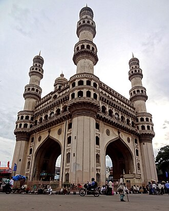

概要
Le Charminar est un monument abritant une mosquée, située à Hyderabad dans l'État du Télangana, en Inde. Considéré comme l'un des monuments emblématiques de l'Inde, c'est l'édifice le plus connu de la ville. À l'ouest du Charminar s'étend le Laad Bazaar, et au sud-ouest la majestueuse mosquée Makkah Masjid.
The Charminar is a monument located in Hyderabad, Telangana, India. Constructed in 1591, the landmark is a symbol of Hyderabad and officially incorporated in the emblem of Telangana. It remained the tallest structure in Hyderabad for 396 years until 1987. The Charminar's long history includes the existence of a mosque on its top floor for more than 435 years. While both historically and religiously significant, it is also known for its popular and busy local markets surrounding the structure, and has become one of the most frequented tourist attractions in Hyderabad. Charminar is also a site of numerous festival celebrations, such as Eid-ul-adha and Eid al-Fitr, as it is adjacent to the city's main mosque, the Makkah Masjid.
Charminar adalah salah satu monumen paling penting di Kota Hyderabad, ibu kota negara bagian Andhra Pradesh, India. Dibangun pada 1591 Masehi, dengan empat menara hiasan didukung oleh empat kubah besar.
چارمینار ، جو 1591 میں تعمیر کیا گیا تھا ، ایک یادگار اور مسجد ہے جو ہندوستان کی ریاست تلنگانہ میں حیدرآباد میں واقع ہے۔ تاریخی نشان عالمی سطح پر حیدرآباد کی علامت کے طور پر جانا جاتا ہے اور یہ ہندوستان کے سب سے زیادہ تسلیم شدہ ڈھانچے میں شامل ہے۔ اس کو سرکاری طور پر تلنگانہ ریاست کے لیے تلنگانہ کا نشان کے طور پر بھی شامل کیا گیا ہے۔ چارمینار کی لمبی تاریخ میں 400 سال سے زیادہ عرصے سے اس کی اونچی منزل پر ایک مسجد کا وجود شامل ہے۔ اگرچہ یہ تاریخی اور مذہبی لحاظ سے دونوں اہم ہیں ، یہ اس ڈھانچے کے آس پاس کی مشہور اور مصروف مقامی مارکیٹوں کے لیے بھی جانا جاتا ہے اور یہ حیدرآباد میں اکثر سیاحوں کی توجہ کا مرکز بن گیا ہے۔ چارمینار جیسے متعدد تہوار کی تقریبات، عید الاضحی اور عید الفطر کی ایک جگہ ہے۔
Das Charminar ist ein Torbau in der mittelindischen Stadt Hyderabad (Telangana). Es ist das bedeutendste historische Bauwerk der Stadt und gleichzeitig eines der Wahrzeichen des ganzen Landes und der islamischen Architektur überhaupt.
El Charminar, construido en 1591, es una mezquita y monumento, una suerte de puerta ceremonial, localizado en la ciudad india de Hyderabad, desde 2014 capital de los estados de Telangana y Andhra Pradesh. El hito se ha convertido en un icono mundial de Hyderabad, y figura entre las edificaciones más reconocidas de la India. El Charminar está en la orilla oriental del río Musi: al noreste se encuentra el Bazar Laad y en el extremo oeste otra mezquita, la ricamente ornamentada en granito Meca Masjid. El nombre Charminar (enlace roto disponible en Internet Archive; véase el historial, la primera versión y la última)., en inglés, es una transliteración y combinación de las palabras urdu Chār y Minar (enlace roto disponible en Internet Archive; véase el historial, la primera versión y la última)., traducida como «cuatro columnas» o «cuatro torres». Las torres epónimas son unas pilastras-minar
Il Charminar è un monumento ed una moschea della città indiana di Hyderabad (Telangana). È considerato il simbolo della città e anche una delle strutture più note dell'architettura islamica e dell'India.
Charminar, também conhecida como Mesquita dos Quatro Minaretes, é um dos monumentos mais importantes da cidade de Haiderabade, capital do estado de Telanganá, na Índia. Foi construída em 1591 por Maomé Culi Cotebe Xá, sultão de Golconda. A mesquita original era uma enorme construção em madeira que representava o túmulo do muçulmano imame Huceine. Huceine era considerado santo e o seu túmulo visto como "escudo" para proteger a cidade contra o surto de cólera no final do século XVI. Quando a epidemia diminuiu, o Charminar foi reconstruído em pedra e argamassa no mesmo local, onde a estrutura original foi construída.[carece de fontes]?
De Charminar is een monument in de Indiase stad Haiderabad . Vrij vertaald betekent Charminar vier torens of Moskee met vier minaretten. Het bouwwerk werd in 1591 gebouwd in opdracht van Muhammad Quli Qutb Shah. Dit omdat de pest was bedwongen. In 1889 werd boven elke poort een klok geplaatst.
查米纳塔门，建成于公元1591年，是位于印度泰倫加納邦首府海德拉巴的一个清真寺，也是印度著名的文化古迹。這座清真寺已成为印度海德拉巴市的標誌。
チャールミナール は、インド・テランガーナ州ハイデラバードに位置する歴史的建造物である。1591年に建設され、ハイデラバードの象徴として知られ、テルングアナ州の州章にも公式に採用されている。上層階には434年以上にわたりモスクが存在しており、宗教的・歴史的に重要な建築物であると同時に、周囲には賑やかな市場が広がり、ハイデラバードでも屈指の観光名所となっている。イード・アル＝アドハーやイード・アル＝フィトルなどのイスラムの祭礼も盛大に祝われる場所であり、隣接するマッカ・マスジド（ハイデラバード最大のモスク）との関係も深い。
차르미나르(텔루구어: చార్మినారు)는 인도 텔랑가나 주 하이데라바드에 있는 모스크이자 기념물이다. 하이데라바드의 주요 관광지 중 하나로, 라마단과 같은 많은 축제가 열리는 곳이기도 하다.
चारमीनार, 1591 में निर्मित, भारत के हैदराबाद, तेलंगाना में स्थित एक स्मारक और मस्जिद है। यह विश्व स्तर पर हैदराबाद के प्रतीक के रूप में जाना जाता है और भारत में सबसे अधिक मान्यता प्राप्त संरचनाओं में सूचीबद्ध है। चारमीनार के लंबे इतिहास में 400 से अधिक वर्षों के लिए इसकी शीर्ष मंजिल पर एक मस्जिद का अस्तित्व शामिल है। ऐतिहासिक और धार्मिक रूप से महत्वपूर्ण, यह संरचना के आसपास के लोकप्रिय और व्यस्त स्थानीय बाजारों के लिए भी जाना जाता है, और हैदराबाद में सबसे अधिक बार आने वाले पर्यटक आकर्षणों में से एक बन गया है। चारमीनार कई त्योहार समारोह की एक साइट है, जैसे कि ईद-उल-अधा और ईद-उल-फितर।
Чарминар — один из самых важных памятников в городе Хайдарабаде, административном центре Андхра-Прадеша, Индия.
จารมินาร์ ก่อสร้างในปี1591 เป็นอนุสาวรีย์และมัสยิดในไฮเดอราบาด เตลังคนา ประเทศอินเดีย ถือเป็นสถานที่แลนด์มาร์กของเมืองที่เป็นเหมือนสัญลักษณ์ของเมืองไฮเดอราบาดและเป็นหนึ่งในสิ่งก่อสร้างที่เป็นที่รู้จักมากที่สุดแห่งหนึ่งในอินเดีย จารมินาร์เคยมีมัสยิดตั้งอยู่บนชั้นบนสุดเป็นเวลากว่า 400 ปี นอกจากความโดดเด่นในเชิงสถาปัตยกรรมและประวัติศาสตร์ที่ยาวนานแล้วตลาดรอบจารมินาร์ก็เป็นตลาดสำคัญที่ชาวพื้นเมืองเดินทางมาจับจ่ายซื้อของอย่างหนาแน่นเป็นประจำ งานเฉลิมฉลองที่จัดที่จารมินาร์ เช่น รัมซาน (Ramzaan)
Charminar är den mest berömda byggnaden i Hyderabad i Indien. Den uppfördes 1591 och har huvudsakligen använts som moské.
Moscheea Charminar este o moschee și un monument din orașul Hyderabad, India. Numele moscheii vine din limba urdu și înseamnă patru turnuri, făcând referire la cele patru minarete.
地図上の位置
資料とリンク
- Wikipédia — Français
- Wikipédia — العربية
- Wikipédia — English
- Wikipédia — Bahasa Indonesia
- Wikipédia — اردو
- Wikipédia — Deutsch
- Wikipédia — Español
- Wikipédia — Italiano
- Wikipédia — Português
- Wikipédia — Nederlands
- Wikipédia — 中文
- Wikipédia — 日本語
- Wikipédia — 한국어
- Wikipédia — हिन्दी
- Wikipédia — Русский
- Wikipédia — ไทย
- Wikipédia — Svenska
- Wikipédia — Română
- Wikidata — Q1771696
データ：ウィキデータ（CC0）、3か月ごとに更新。年は、その建物について知られている最も古い建設年です。のちにモスクになった建物（アヤソフィアなど）の場合は、元の建物の建設年です。写真：ウィキメディア・コモンズ。作者とライセンスは各写真のページにあります。